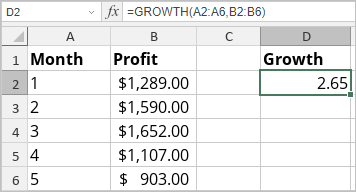

GROWTH funkcija
Funkcija GROWTH je jedna od statističkih funkcija. Koristi se za izračunavanje predviđenog eksponencijalnog rasta koristeći postojeće podatke.
Sintaksa
GROWTH(poznati_y, [poznati_x], [novi_x], [konst])
Funkcija GROWTH ima sledeće argumente:
| Argument | Opis |
|---|---|
| poznati_y | Skup poznatih y-vrednosti u jednačini y = b*m^x. |
| poznati_x | Opcionalni skup poznatih x-vrednosti u jednačini y = b*m^x. |
| novi_x | Opcionalni skup x-vrednosti za koje želite da funkcija vrati y-vrednosti. |
| konst | Opcionalni argument. TRUE ili FALSE vrednost gde TRUE ili izostanak argumenta omogućava normalno izračunavanje b, a FALSE postavlja b na 1 u jednačini y = b*m^x. |
Napomene
Ovo je niz formula. Za više informacija pročitajte članak Umetanje niz formula.
Kako primeniti funkciju GROWTH.
Primeri
Slika ispod prikazuje rezultat koji vraća funkcija GROWTH.
